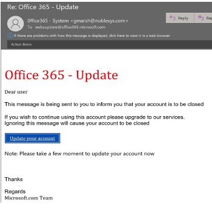
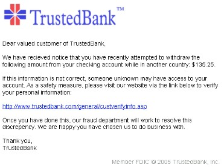
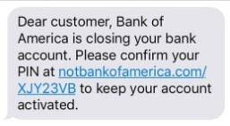
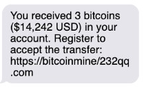

Introduction to Phishing
As the internet continues to grow, so does the need for cyber security. Since last year there’s been a 53% increase in the volume of phishing scams. Phishing is a social engineering attack in that scammers try to steal personal data using deceptive emails, text messages, and websites. In order to trick victims to provide them with sensitive information, leading them to believe the messages they’ve received. These messages are often something the victims want or care about, and scammers pretend to be a well-known source, person, or company that the victim usually has an account with when they’re interacting to gain the victims’ trust. The most vulnerable demographic is adolescence, as they exhibit more reckless behavior while online. Followed by older folks in the 70-79 age group, as they often have low computer literacy skills.Common Phishing Types
Email Phishing
1. Most common type of phishing attack.
2. Targets a non-specific individual.
3. Message creates a sense of urgency using tense language structure.
4. Includes suspicious links and other attachments.
Spear Phishing
1. Personalized and more targeted form of phishing.
2. Targets a non-specific individual.
3. Hackers have some information about the victim (name, job, email, etc.)
4. Message or email comes from a trustworthy source.
5. Professionally designed in format and content.
6. Individuals' personal information is used.
Whaling
1. More targeted than spear phishing.
2. Targets very important people (senior executives).
3. Professionally designed using business language and tone.
4. Looks believable when it comes from a trusted supplier or partner.
Smishing
1. Uses text messages to steal victim's information.
2. Hackers trick victims to click on suspicious links or download malicious programs to their phones.
Vishing
1. Uses phone conversations to steal victims’ information.
2. Hackers trick the victims by scaring and emotionally manipulating them.
3. Hackers usually pose as an investigator from a bank or police station.
EXAMPLE
To illustrate an example of phishing to make it smoother to comprehend the process of phishing and the way it functions. Let's say you receive an email from your bank in which they’re asking you to log in to your account and update your details to improve your account’s security; they also provide a link that takes you straight to a page where you can fill in your personal and banking information. After opening the link you are going to see a convincing website that looks exactly like your bank’s website so you are going to trust the website and give the scammers all your log-in information and banking data that they would use to steal from you. Moreover, there are several phishing emails that look like a joke with titles like “You’ve won $1 Million! Click on the link below to deposit” or “Buy a Toyota car for only $50!” which are obviously a scam but even if not that many people would fall for them, these emails make people believe that all phishing emails are that obvious, which means you are less likely to spot a professionally designed scam.
Here are some images to help illustrate the tactics that phishing scammers use:


Recognizing Attacks
Here are the best ways to recognize these attacks:
1. Grammar: The first and easiest way to recognize a phishing scam notably the misspelling of specific words and the use of what we’ll refer to as ‘mock’ words. These are the hard-to-notice differences between the characters: l & 1, m & rn.
2. Personal Data: Demanding login credentials or other sensitive personal data is another prominent characteristic of countless phishing scams.
3. Unsecure Website: The use of an unsecured website, meaning the URL (a.k.a website address) begins with HTTP:// rather than HTTPS:// with the notable difference being the addition of the S at the end of the second example.
4. Pop-UpsThese are utilized to entice the user to click on them. Often bombarding the user shortly after they’ve begun interacting with the scam. What purpose these pop-ups serve can be a variety of functions. But, often they serve as a doorway to confusion, often lying about the function of such pop-ups. Once clicked on, it often opens the gateway for malware, spyware, and trojans to the computer.
5. Out of the Blue: Often if something seems too good to be true or contains a weird greeting it likely is a phishing scam trying to take advantage of the benefit of the doubt. Often a general rule of thumb is your gut feeling. If the email or website seems unusual it's best to steer clear of that entity.
Avoiding Attacks
Here are the best ways to avoid these attacks:
1. Secure Browser: One of the first things anyone who uses a computer should have when using the internet. Fair examples are Google Chrome and Firefox. These search engines help limit the potential scams a user may come across, by identifying indexed websites for malware or other malicious content within a website and also gathering data from other users of the browser to improve its cyber security.
2. Manually Enter URL: Entering the website manually can also contribute to the avoidance of fishing scams. This is the action of typing in the website's address (URL) into the search engine and accessing through this method.
3. Disable Automatic Message Loading: Not commonly used, is the stoppage of the automatic loading of emails in one's inbox. Automatic loading is a feature that makes reading emails an easier task, as messages are downloaded shortly after they’re sent so the user doesn’t have to wait when they login to their email. In effect, malicious software can sneak its way into a user's computer through this mechanism.
4. Firewall: Using a firewall is a no-brainer. This preventative measure serves to block malicious traffic such as viruses, malware, and hackers. It often comes with any modern computer that uses windows as its operating system.
5. Anti-Phishing Toolbars: can also be installed, often as browser extensions offered by Google Chrome in the hundreds of thousands..
6. Anti-Virus Software: serves as a last resort for the user in situations where the phishing scam has already compromised the computer..
Though it might be hard to learn how to spot phishing attempts without falling into a paranoid state, all you can do to keep yourself safe is to stay alert and try to avoid revealing any of your personal details online, especially on links that you receive on personal emails.
How to Protect Employees from Phishing Attacks
Phishing is one of the main ways that security attackers will attack companies. A 2021 cybersecurity report from CISCO states at least one person clicked a phishing link in approximately 86% of organizations. Furthermore, this data has indicated phishing accounts as the leading role in nearly 90% of data breaches. For instance, when attackers want to target a company, they’re going to do some research on the company on applications like LinkedIn and make a list of employees that they want to target. Then, send personalized emails to these employees to get them to click on a link or respond to their email which may give the attackers access to sensitive information.
Things companies and employees can do to protect themselves:
1. Companies can train their employees for spotting phishing emails and spread awareness among the workers.
2. By using Gmail, they can decrease the chance of receiving phishing emails. Since Gmail automatically scans to identify phishing emails, and if a phishing email is detected, it’s discarded before showing up in the user’s inbox.
3. Scheduling periodic back-ups, in case of an emergency, can help to save and recover your data.
4. Using multi-factor authentication will prevent the hacker from accessing the data, even if they managed to steal an employee’s log-in credentials.